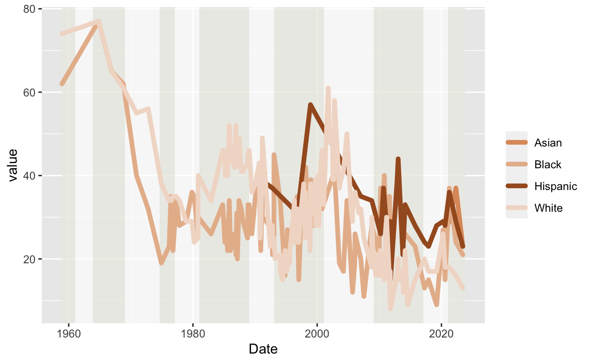
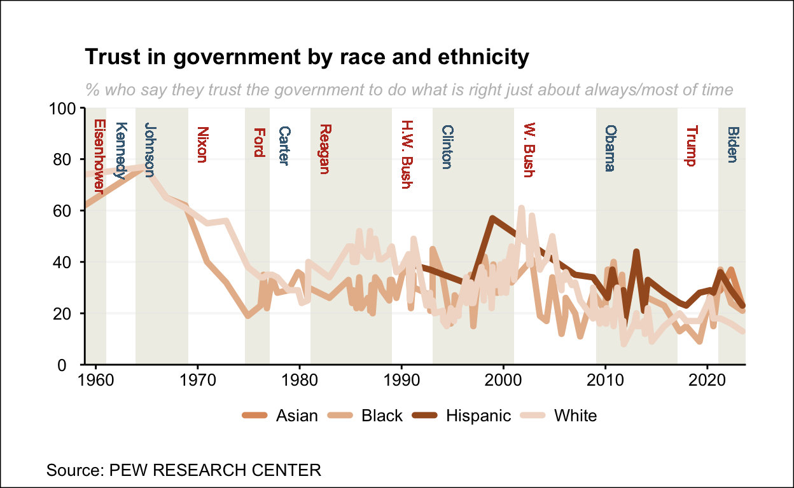

Introduction
In recent decades, perceptions of U.S. presidents have experienced a significant change, reaching historically low levels in recent years, which has led to numerous debates and articles discussing this phenomenon. In this paper, however, we will not only analyse the overall trust in presidential leadership, but we will disaggregate this trust by ethnic and racial categories within American society. Our goal is to understand the distinctive variations that emerge in this context and to examine closely how different communities evaluate the effectiveness and integrity of presidents. At the same time, we will be able to explore the impact that different leaders and historical events have had on society’s trust in government.
In order to carry out this research, we will rely on the newspaper article provided by Pew Researhc Paper, which analyses this social phenomenon in detail.
The original graph
The original graph that we are going to take into account for this article can be found on the same page mentioned in the previous section. This graph, as you can see below, presents information on the confidence of United States citizens in the different governments from 1958 to 2023. More specifically, the graph shows information on the most numerous races and ethnicities in the United States, which are Hispanic, Black, White and Asian. In addition, it allows us to see in which periods of time and under which US president there has been a growth or decline in trust, which could be interesting for numerous studies and to understand how social and political evolution has changed.
{kind=link}
Background
The history of ethnic and racial differences in the United States has been a difficult one, marked by diverse experiences and problems over time. From the earliest days of colonization, the presence of different ethnic groups, such as Native Americans, enslaved Africans, Europeans and later immigrants from various regions of the world, has shaped the cultural diversity of the nation. However, they have also faced significant challenges, such as slavery and racial discrimination, showing social inequalities. These experiences have consequently left their mark on society, generating distrust of government, especially when presidents have failed to adequately address these problems.
However, while challenges persist, history also shows progress toward equality, and the relationship between ethnic identity and perceptions of the presidency remains an important theme in U.S. history.
Working with the data
The data we are going to use throughout the work are collected from numerous sources, such as Pew Research Center, National Election Studies, Gallup, ABC/Washington Post, CBS/New York Times, and CNN Polls. Moreover, the database for race and ethnicity analysis was obtained from searches of the iPOLL Databank provided by the Roper Center for Public Opinion Research. This database was obtained through telephone surveys of random individuals in the United States. More information on the questions that were used can be found here. Although the data is obtained from different sources, the complete database can be downloaded at Pew Researhc Paper
Packgages
The libraries that we are going to use in all the work, both in the replica and in the subsequent improvements, are the following:
Cleaning and getting the data
The database provides information on the trust of citizens of different ethnicities and races on specific dates in the history of the United States. The trust of citizens is represented as a number between 0 and 100, with 0 being no trust and 100 being total trust. First, we have had to transform the “Date” column, which provides the different dates, into a specific format, which will facilitate the handling and analysis of temporal data.
data <- read_csv("database.csv")
data.df <- data.frame(data[1:150,1:6])
data.df$Date <- as.Date(data.df$Date, format = "%m/%d/%Y")The second step we have done in order to be able to treat the data correctly and to be able to analyse it, is to convert the data with tidyverse, in order to be able to clean it from NA. The reason for choosing Tidyverse is that it allows us to omit missing values without losing valuable information.
data.df <- data.df |>
tidyr::pivot_longer(c(Hispanic, White, Asian, Black)) |>
na.omit()
data.df# A tibble: 283 × 4
Date . name value
<date> <chr> <chr> <dbl>
1 2023-06-11 PEW Hispanic 23
2 2023-06-11 PEW White 13
3 2023-06-11 PEW Asian 23
4 2023-06-11 PEW Black 21
5 2022-05-01 PEW Hispanic 29
6 2022-05-01 PEW White 16
7 2022-05-01 PEW Asian 37
8 2022-05-01 PEW Black 24
9 2021-04-11 PEW Hispanic 36
10 2021-04-11 PEW White 18
# ℹ 273 more rowsFinally, before starting to replicate the graph, we have created a series of vectors which will be necessary later on in the elaboration of the graph. Such as the case of “years_to_highlight” which indicates the dates in which the mandate of the different presidents of the U.S. history from Eisenhower to Biden begins. The U.S. presidents we are going to take into account are the following:
Dwight D. Eisenhower (1953-1961) - Republican Party
John F. Kennedy (1961-1963) - Democratic Party
Lyndon B. Johnson (1963-1969) - Democratic Party
Richard Nixon (1969-1974) - Republican Party
Gerald Ford (1974-1977) - Republican Party
Jimmy Carter (1977-1981) - Democratic Party
Ronald Reagan (1981-1989) - Republican Party
George H.W. Bush (1989-1993) - Republican Party
Bill Clinton (1993-2001) - Democratic Party
George W. Bush (2001-2009) - Republican Party
Barack Obama (2009-2017) - Democratic Party
Donald Trump (2017-2021) - Republican Party
Joe Biden (2021-present) - Democratic Party
It should be noted that we will only use data from 1958 onwards, i.e. we will not consider Eisenhower’s entire term of office.
years_to_highlight <- c(
"1958-12-01", # Dwight D. Eisenhower
"1961-01-20", # John F. Kennedy
"1963-11-22", # Murder de John F. Kennedy
"1963-11-22", # Lyndon B. Johnson assumes the presidency
"1969-01-20", # Richard Nixon
"1974-08-09", # Resignation of Richard Nixon
"1974-08-09", # Gerald Ford takes office
"1977-01-20", # Jimmy Carter
"1981-01-20", # Ronald Reagan
"1989-01-20", # George H.W. Bush
"1993-01-20", # Bill Clinton
"2001-01-20", # George W. Bush
"2009-01-20", # Barack Obama
"2017-01-20", # Donald Trump
"2021-01-20" # Joe Biden
)On the other hand, we also convert into a vector the dates that will later be represented on the x-axis, which is 10 years difference.
Finally we are going to add a function, which will be used to modify the background of the chart. The purpose of this function is to differentiate the background by sections of two different colours, White and “Beige” (being more specific #F0F0E6), which are interspersed. This difference is used to clarify the periods in which different presidents ruled.
To do this, we will create a series of vectors, “rect_dates”, which indicates the dates on which the background colours will change, “rec_alpha”, which is used to indicate the transparency of each rectangle that we will use to modify the background and “rect_colors” which indicates the different colours.
In short, the fucnion uses “lapply” to generate a list of rectangular layers, each representing a time interval defined by the dates in “rect_dates”. Each rectangle has a specific colour and transparency according to the “rect_colors” and “rect_alpha” vectors. These rectangles can then be added to a chart to highlight and visualize specific time segments. The function is called “rect_layers”.
rect_dates <- c(
"1958-12-01", "1961-01-20", "1963-11-22", "1969-01-20", "1974-08-09", "1977-01-20",
"1981-01-20", "1989-01-20", "1993-01-20", "2001-01-20", "2009-01-20",
"2017-01-20", "2021-01-20", "2023-10-12"
)
rect_colors <- c("#F0F0E6", "white", "#F0F0E6", "white", "#F0F0E6", "white",
"#F0F0E6", "white", "#F0F0E6", "white", "#F0F0E6", "white", "#F0F0E6" , "white")
rect_alpha <- c(0.2,0.1, 0.2, 0.1, 0.2, 0.1, 0.2, 0.1, 0.2, 0.1, 0.2, 0.1, 0.2, 0.1, 0.2)
rect_layers <- lapply(1:(length(rect_dates) - 1), function(i) {
geom_rect(
aes(xmin = as.Date(rect_dates[i]), xmax = as.Date(rect_dates[i + 1])),
ymin = -Inf, ymax = Inf,
fill = rect_colors[i], alpha = rect_alpha[i],
inherit.aes = FALSE
)
})Building the graph
First steps…
In order to analyse the data correctly, we will replicate the original graph developed by Pew Research Paper, which we mentioned earlier. Consequently, the first step to follow is to construct the axis on which our line chart will be developed.
To do so, we will use the time variable on the x-axis, which shows the different dates on which respondents were called to obtain the results. While on the y-axis, we have represented “Value” which shows the value of trust that voters placed in the presidents over time.
Once the axis is established, the next step is to modify the background, as we have briefly mentioned before, in which we will use the function called “rect_layers” which we have already explained in previous sections. Its use will allow us to divide the background into two colours, forming different rectangles.
j <- j + rect_layers
j
Once the background of the graph has been divided according to the duration of government of the respective presidents, we introduce the data for the respective ethnicities. The different lines show how the trust of the different races and ethnicities has evolved over time in the United States. We have also added the legend in order to distinguish the different lines and know who they correspond to.
j <- j + geom_line(linetype="solid", size=1.75, alpha = 1, lineend= "round") +
scale_color_manual(
values = c( "Asian" = "#DE996A","White" = "#F2DBCD","Black" = "#E7BA9A","Hispanic" = "#A55A26"),
name = ""
)
j
Once the initial phase of the project has been completed, the next step will be to perfect it. So the next step will be to focus on the aesthetic aspect, seeking to enhance and expand its visual qualities, with the aim of making it look as similar as possible to the original graphic.
More aesthetic
In this part of the code I have focused on improving the title of the graphic, the subtitle, and the caption. At the same time we have added the X and Y axes, adding the corresponding scales to improve the compression of the line chart.
In the previous graph, the x-axis was segmented into 20-year sections, and at the same time, it is observed that the x-axis goes beyond the limits of the data, generating empty spaces at the extremes. In other words, the graph starts before the first data, collected in 1958, and ends after the last data in 2023, which can lead to confusion. On the other hand, the y-axis is less well represented, as it only shows information up to 80% confidence. To improve visualization, the x-axis could be adjusted to cover only the range of years available, providing a more accurate representation. Similarly, extending the y-axis to 100% would allow more subtle variations in confidence to be captured, providing a more complete representation of the data.
Consequently, the function “scale_x_date” has been used in order to define the desired intervals and eliminate the gaps on the x-axis, using the vector previously named “desired_dates”, which organises the dates by decades. By using the format “%Y”, we achieve that only the years on the x-axis are displayed. Simultaneously, we have used the “expand” function to adjust the spacing between the ends of the graph and the y-axis, indicating that we want to remove any unnecessary space, which helps to eliminate gaps without data.
For the y-axis, we have applied similar strategies. We used the “breaks” and “limits” functions to set the limits and frequency of occurrence of numbers on the y-axis, extending the limits up to 100%.
j <- j +
labs(
x = NULL,
y =NULL,
title = expression(paste(bold("Trust in government by race and ethnicity"))),
subtitle = "% who say they trust the government to do what is right just about always/most of time",
color = "Ethnicity:",
caption = "Source: PEW RESEARCH CENTER") +
scale_x_date(
breaks = desired_dates,
labels = format(desired_dates, "%Y"),
expand = c(0.00, 0.00)
) +
scale_y_continuous(
limits = c(0, 100),
breaks = seq(0, 100, by = 20),
expand = c(0, 0)
) Theme
In this section of the code, we focus on refining the details of the graphic with the goal of making it as close as possible to the original design. To achieve this, we are using the “theme” function, which gives us the ability to adjust a variety of visual and stylistic elements of the graphic.
Some of the most important adjustments made focus on refining the aesthetics and presentation of the graphic. This process involved customizing several key elements, addressing specific details to achieve a visually coherent and highly readable design. Among the highlights are modifying the size and style of the subtitle to highlight relevant information, specifically selecting the position and appearance of the legend to improve the visual layout, as well as adapting the format and position of the axes for a more accurate and easy-to-understand representation. In addition, the background of the chart is taken care of and margins are added to provide a more polished and professional overall appearance.
j <- j +
theme_minimal() +
theme(
plot.subtitle = element_text(size = 10, color = "grey", face = "italic"),
plot.caption = element_text(hjust = -0.1, vjust = -10.0, color = "black", size = 10),
legend.position = "bottom",
legend.title = element_text(face = "bold"),
legend.text = element_text(size = 10),
legend.margin = margin(t = 0, b = -0.2, unit = "cm"),
axis.line = element_line(size = 0.5, color = "black"),
axis.text = element_text(size = 10, color = "black"),
axis.title = element_text(size = 12, color = "black", face = "bold"),
panel.grid.minor = element_blank(),
panel.grid.major.x = element_blank(),
axis.ticks.x = element_line(size = 0.5),
axis.text.x = element_text(angle = 0, hjust = 0.5),
axis.ticks.y = element_line(size = 0.5),
axis.text.y = element_text(angle = 0, hjust = 0.5),
plot.background = element_rect(fill = "white"),
plot.margin = margin(1, 1, 1, 1, "cm"),
legend.key.width = unit(1, "cm"),
legend.key.height = unit(1, "cm"),
legend.spacing = unit(0.5, "cm"),
legend.box.margin = margin(0, 0, 0, 0, "cm")
)
jOther details and replica
In this final phase of the work, we focused on making the last improvements to obtain the final replica of the chart. We started by using the “guides” function, which plays a crucial role in improving the appearance and clarity of the legend. Through this function, we adjust specific aspects of the legend’s presentation, such as its position, title, and text formatting.
j <- j + guides(
color = guide_legend(
keywidth = 1, keyheight = 0.5,
label.position = "right",
ncol = 4
)
)In the final phase of replicating the original graph, the names of the presidents have been added above each rectangle to clearly identify the periods of their administrations. In addition, a colour code has been introduced, using red for Republican presidents and blue for Democratic presidents, to indicate the political party they represented in each case. On the other hand, we have marked it as a vector to be used later in a simpler way.
president <- c(
geom_text(aes(x = as.Date("1958-12-01"), y = 90), label = "Eisenhower",
vjust = -1, hjust = 0.2, size = 3, angle = -90, color = "#bf3927"),
geom_text(aes(x = as.Date("1961-01-20"), y = 90), label = "Kennedy",
vjust = -1, hjust = 0.2, size = 3, angle = -90, color = "#436983"),
geom_text(aes(x = as.Date("1963-11-22"), y = 90), label = "Johnson",
vjust = -1, hjust = 0.2, size = 3, angle = -90, color = "#436983"),
geom_text(aes(x = as.Date("1969-01-20"), y = 90), label = "Nixon",
vjust = -1, hjust = 0.2, size = 3, angle = -90, color = "#bf3927"),
geom_text(aes(x = as.Date("1974-08-09"), y = 90), label = "Ford",
vjust = -1, hjust = 0.2, size = 3, angle = -90, color = "#bf3927"),
geom_text(aes(x = as.Date("1977-01-20"), y = 90),
label = "Carter", vjust = -1, hjust = 0.2, size = 3, angle = -90, color = "#436983"),
geom_text(aes(x = as.Date("1981-01-20"), y = 90),
label = "Reagan", vjust = -1, hjust = 0.2, size = 3, angle = -90, color = "#bf3927"),
geom_text(aes(x = as.Date("1989-01-20"), y = 90), label = "H.W. Bush",
vjust = -1, hjust = 0.2, size = 3, angle = -90, color = "#bf3927"),
geom_text(aes(x = as.Date("1993-01-20"), y = 90), label = "Clinton",
vjust = -1, hjust = 0.2, size = 3, angle = -90, color = "#436983"),
geom_text(aes(x = as.Date("2001-01-20"), y = 90), label = "W. Bush",
vjust = -1, hjust = 0.2, size = 3, angle = -90, color = "#bf3927"),
geom_text(aes(x = as.Date("2009-01-20"), y = 90), label = "Obama",
vjust = -1, hjust = 0.2, size = 3, angle = -90, color = "#436983"),
geom_text(aes(x = as.Date("2017-01-20"), y = 90), label = "Trump",
vjust = -1, hjust = 0.2, size = 3, angle = -90, color = "#bf3927"),
geom_text(aes(x = as.Date("2021-01-20"), y = 90), label = "Biden",
vjust = -1, hjust = 0.2, size = 3, angle = -90, color = "#436983")
)
j <- j + president
j
Limitations
Before moving on to the analysis of the graph and exploring the possible impacts that this study could generate, it is necessary to address a number of limitations that affect its clarity and comprehensibility. First of all, there are obvious areas for improvement, for example, the excessive accumulation of lines in the central section, which makes the graph difficult to interpret. Furthermore, the similarity of colours used adds to the difficulty of the aforementioned visual problem. Additionally, when examining the lines corresponding to the Hispanic and Asian ethnic groups, there is a later beginning, especially noticeable in the case of Asia, where they are difficult to see due to the accumulation of lines. Nevertheless, I believe that this graph has a lot of potential for improvement to show the data with more detail and accuracy, as I consider this to be the main problem with the graph.
For this reason, before we go into explaining the bugs, we are going to make a number of improvements that could greatly benefit the compression of the line chart.
Improvements
At this stage of the work, we will focus on improving the graph in order to make the analysis more effective and the visualization more understandable.
Add a new variable
One potential problem that we may encounter in further analysis is the absence of a reference point to assess with greater precision and accuracy the impact on the US presidency. Because of this, we have decided to add a new variable, “Trust.Average”. This variable allows us to measure the average trust of US citizens, which becomes an essential factor in measuring when the trust of different ethnicities is below or above the average trust.
It also gives us the ability to examine in more detail the specific times when changes in trust occur. This allows us to identify when the trust of different ethnicities shifts from above to below average, better understanding how different presidents and what time periods have impacted this process of variation in trust.
To add this variable, we have used another database provided by Pew Research Paper, which has the same format as our original database, so it is quite easy to add the confidence mean to our database.
data <- read_csv("database.csv")
data.df <- data.frame(data[1:150,1:6])
data.df$Date <- as.Date(data.df$Date, format = "%m/%d/%Y")
trust <- read_csv("chart-export-cda90f7d-1ac9-45fd-99e1-ec61f808868b.csv")
trust.df <- data.frame(trust[1:150,1:4])
data.df$Trust.Average <-trust.df$Trust.average
data.df$Date <- as.Date(data.df$Date, format = "%m/%d/%Y")Once the variable has been added, we clean the NA data again with tidyverse. In addition, we have also named a new vector, which collects the names of the ethnicities, which we will use and explain later.
data.df <- data.df |>
tidyr::pivot_longer(c(Hispanic, White, Asian, Black)) |>
na.omit()
data.df# A tibble: 283 × 5
Date . Trust.Average name value
<date> <chr> <dbl> <chr> <dbl>
1 2023-06-11 PEW 16 Hispanic 23
2 2023-06-11 PEW 16 White 13
3 2023-06-11 PEW 16 Asian 23
4 2023-06-11 PEW 16 Black 21
5 2022-05-01 PEW 20 Hispanic 29
6 2022-05-01 PEW 20 White 16
7 2022-05-01 PEW 20 Asian 37
8 2022-05-01 PEW 20 Black 24
9 2021-04-11 PEW 21 Hispanic 36
10 2021-04-11 PEW 21 White 18
# ℹ 273 more rowsSolving problems
First of all, we are going to solve one of the main problems with the graph and that was the similarity of colours, which made it difficult to recognize and distinguish the different lines.
j <- ggplot(data.df)+
aes(Date, value, color=name)+
rect_layers+
geom_line(linetype="solid", size=1.75, alpha = 1) +
scale_color_manual(
values = c("Asian" = "#cdb4db", "White" = "#bde0fe", "Black" = "#ffafcc", "Hispanic" = "#a7c957"),
name = "Ethnicity and race: "
)In the following code we are going to implement the new variable “Trust.Average”, which we have added as “dashed” so that there is no confusion with the colours, being easily visible and comparable with the rest of the variables.
j <- j+
geom_line(aes(x = Date, y = Trust.Average, linetype = "Trust.Average"), color = "black") +
scale_linetype_manual(name = "Trust.Average", values = "dashed")
jWe re-create the title and add the same details again.
j <- j +
labs(
x = NULL,
y =NULL,
title = expression(paste(bold("Trust in government by race and ethnicity"))),
subtitle = "% who say they trust the government to do what is right just about always/most of time",
color = "Ethnicity:",
caption = "Source: PEW RESEARCH CENTER")New axes
Another important improvement we have developed is in the x-axis line, where we have added many more important dates that mark crucial events in US history, with significant impacts on public confidence and perceptions of the government. Here is a brief explanation of each of them:
MLK. Jr Murdered. - 1968: The assassination of Martin Luther King Jr. was a critical moment in the struggle for civil rights, affecting confidence in equality and social justice.
End of the Vietnam War - 1975: The conclusion of the Vietnam War in 1975 was a historic milestone in ending direct U.S. military involvement, generating profound reflections on foreign policy, social resistance and the reconceptualization of the U.S. role in international conflicts.
Irangate - 1986: The Irangate scandal revealed the Reagan administration’s secret sale of arms to Iran, with funds destined for Nicaraguan rebels. This generated controversy over government transparency and ethics, impacting on trust in government integrity.
Oklahoma City Bombing - 1995: The terrorist attack in Oklahoma City, which resulted in the deaths of 168 people, left a deep imprint on the national conscience and led to an increase in homeland security.
9/11 - 2001: The terrorist attacks of September 11 caused the deaths of thousands of people, leading the United States to declare the “War on Terror”. This transformative event altered global politics, national security and the perception of risk in American society.
Financial Crisis of 2008: The Financial Crisis, triggered by the collapse of large financial institutions and the housing bubble, resulted in a global recession. The consequences included massive job losses, government intervention in the financial sector and significant economic reforms to prevent future crises.
Snowden Revelations - 2013: Edward Snowden, a National Security Agency (NSA) contractor, leaked classified documents that revealed massive U.S. government surveillance programs. These revelations generated intense debate about privacy, national security and the ethics of spying, impacting intelligence policies and public perception.
COVID-19 - 2020: The COVID-19 pandemic, which began in 2019, had a devastating impact on public health globally, triggering economic crises and undermining confidence in governmental responsiveness
This incorporation is essential to our analysis, as it gives us the opportunity to examine in greater detail and precision how each of these historical events impacted on the trust of different ethnicities. This comparison allows us to identify whether these events affected the average trust of individuals, as well as whether any of these events significantly affected one ethnicity or race more than another.
j <- j+ scale_x_date(
breaks = c(desired_dates, as.Date("2001-09-11"), as.Date ("2021-12-20"),
as.Date("2008-01-01"), as.Date("2013-02-02"), as.Date("1995-01-01"),
as.Date("1975-04-30"), as.Date("1967-04-20"), as.Date("1985-08-20")),
labels = c(format(desired_dates, "%Y"), "9/11", "COVID-19", "2008 Crisis",
"Snowden revelations", "Oklahoma City Bombing", "End of Vietnam War",
"MLK.Jr Murdered", "Irangate"),
expand = c(0.00, 0.00),
)+
scale_y_continuous(
limits = c(0, 100),
breaks = seq(0, 100, by = 20),
expand = c(0, 0)
)Final details
Again, we reuse the “theme” function in which we have introduced slight improvements to show a neater and more detailed graphic and we add the “president” vector we created earlier, which we have not modified from the original graphic.
j <- j + theme_minimal() +
theme(
plot.subtitle = element_text(size = 10, color = "grey", face = "italic"),
legend.position = "bottom",
legend.title = element_text(face = "bold", size=10),
legend.text = element_text(size = 10),
legend.margin = margin(t = 0, b = -0.2, unit = "cm"),
axis.line = element_line(size = 0.5, color = "black"),
axis.text = element_text(size = 10, color = "black"),
axis.title = element_text(size = 12, color = "black", face = "bold"),
panel.grid.minor = element_blank(),
panel.grid.major.x = element_blank(),
axis.ticks.x = element_line(size = 0.5),
axis.ticks.y = element_line(size = 0.5),
axis.text.x = element_text(angle = 45, hjust = 1),
axis.text.y = element_text(angle = 0, hjust = 0.5),
plot.background = element_rect(fill = "white"),
plot.margin = margin(t=0.45, r= 0.5, b=0, l= 0.5, "cm"),
legend.key.width = unit(1, "cm"),
legend.key.height = unit(1, "cm"),
legend.spacing = unit(0.5, "cm"),
legend.box.margin = margin(0, 0, 1, 0, "cm"),
plot.caption = element_text(hjust = 0, vjust = 0, color = "black", size = 10,
margin = margin(t = 0, b = 0.5, l = 0, r = 0, "cm"))
) + presidentWe add a modification to the legends
j <- j +
guides(
color = guide_legend(
keywidth = 2, keyheight = 0.2,
title.position = "top",
label.position = "bottom",
ncol = 4
)) + guides(linetype = guide_legend(title = NULL,
label.position = "bottom", keywidth = 0.2))Final graph
Despite improvements, the graph is still quite confusing, as there are many lines that are concentrated at similar points. This accumulation of lines can be confusing, making the interpretation of the graph more complicated. It is therefore necessary to treat data visualisation even more effectively to achieve a clearer and more accessible representation, ensuring that the information is easily assimilated by those viewing the graph.
Consequently, we have used the function “facet_wrap” to divide the graph by ethnicity, leaving the variable “Trust.Average” as a constant. In this way, the graph is much more understandable, allowing us to take the average as a reference and make comparisons between graphs with greater precision. In addition, we have used the vector “names” mentioned above to display the graphs in the following order:
j <- j+
facet_wrap(~name, scales = "free",nrow=2, ncol=2)
jAnalysis and results
Once the improvement has been made, we can see that the graph is much clearer, which will allow us to analyse more precisely how US citizen confidence in the presidency has evolved and what historical factors may have affected these developments.
First of all, it should be mentioned that these facts do not link direct causality, but provide a clearer visual representation of the underlying data. That is, the improved visualisation of the chart focuses on variations and trends, allowing us to identify patterns that might have previously gone unnoticed. However, at no point can we claim that these variations in confidence are due to the facts we mentioned, as well as to the president in question. This is because a large number of factors would have to be taken into account that cannot be predicted, at least not with our data. Therefore, our analysis will be based on observing how the different populations reacted to the different periods and analysing the key moments that have influenced citizens’ perceptions of the presidency.
Conclusions and explanations
First of all, we are going to focus on explaining the 2 main graphs, which are those corresponding to the “White” and “Black” breeds. These are considered the main ones because they provide more data, since they start in 1958, therefore, we can make a more precise study and allow us to analyse a greater number of details.
In the graph that represents white people, the first thing that strikes us is the large decrease in trust over the years, as in 1958 trust was around 80% and in 2023 it dropped to just 20%. This shows that regardless of the type of government, the trust of white people has declined enormously. On the other hand, since Johnson’s presidency, the trust of this race plummeted and broke through the median barrier at the end of the Vietnam War along with the beginning of Carter’s presidency. This means that this date seems to be the exact point at which white confidence was below average for the first time in history, declining throughout that president’s term until the arrival of Nixon, where he regained confidence and again surpassed the average.
However, one fact that is quite remarkable about this mandate is the lack of importance or repercussions that Irangate had, because although the average level of trust decreased from that date onwards, the trust of white people remained fairly constant. Subsequently, with the Bush administration, trust was also above average until the arrival of Clinton, when trust was again below average. However, during the eight years of Democratic rule, average trust increased by almost 40% during this period. Moreover, the beginning of this period of trust growth seems to coincide with the Oklahoma bombing. In 2001 there was a change of government from Democrat to Republican, with Bush again as President. However, this year was marked by the attack on the Twin Towers on 11 September 2001 (known as 9/11 or 11S ), which triggered the beginning of a loss of confidence in the government that continues to this day, both on average and in the specific case of white people. Since then, the only time that white people’s trust has been above average was with Trump. In general, we can observe that the trust of white people tends to be above average when political representatives belong to the Republican party. However, the overall average tends to decrease when these candidates are not in government.
On the other hand, in the case of Black individuals, we can see how their confidence in the government has also decreased over time, consistently remaining below the average. The trust of Black people in the government has remained relatively constant over time, ranging between 20% and 40%, except during two key events. The first and most notable change occurred with the assassination of Martin Luther King Jr. Following those dates, there was a marked decline in trust, which is understandable considering the impact of this historical event. Martin Luther King was one of the early and prominent advocates for racial equality in the United States. His assassination in 1968 not only represented the tragic loss of an influential leader but also symbolized a significant setback for the civil rights movement and equality. From that moment until the Clinton administration, trust remained below average, but this only lasted for a couple of years until the Oklahoma bombing.
The second event that saw a resurgence in the confidence of Black individuals was during the Obama administration. Upon assuming office in 2009, Obama became the first African-American president of the United States. His tenure marked a historic milestone that not only symbolized progress towards inclusion and diversity in the country’s leadership but also had a significant impact on the perception of the African-American community. The cultural connection and identification with a leader who shared their ethnic heritage contributed to strengthening trust in government institutions. Additionally, the policies and programs implemented during his administration to address specific challenges faced by the Black community reinforced the notion of progress and social justice, thus consolidating a tangible improvement in the confidence of this population during that period.
Regarding the Hispanic ethnicity, for which we only have information from 1990, their confidence also shows a negative trend, although much less abrupt than in the previous cases, consistently remaining above the average. The historical event that most affected their confidence was the 9/11 attacks, similar to the majority of citizens in the country. It is also noted that in 2010, during the Obama administration, there were variations in their confidence, possibly influenced by the revelations of Edward Snowden.
Finally, regarding Asians, we have very little information to effectively assess the provided data. However, starting from the COVID-19 crisis, there is observed a decrease in their confidence in the government, which could make sense considering that they were the target of attacks and discrimination during the pandemic. The Asian community faced stigmatization and prejudice linked to the origin of the virus, which possibly influenced their perception of the government.
In summary, we can affirm that the overall trust of American citizens has decreased over the years, affecting all the ethnicities and races we have observed. However, this decline has not affected all Americans equally. The analysis shows that white individuals have consistently shown a significant increase in trust when representatives from the Republican party are in power, a situation not mirrored in the majority of other cases, where trust tends to decline. The same pattern is observed with specific events, such as the assassination of Martin Luther King Jr., which had a more significant impact on the trust of Black individuals, or the COVID-19 pandemic, which affected the trust of Asian individuals.
Possible future implications
This growing crisis in governmental trust could trigger a number of significant consequences on the stability and effectiveness of the political system, as well as result in increased social polarization, loss of legitimacy of governmental institutions and decreased citizen participation in the democratic process. Therefore, it will be essential to carefully analyze the underlying causes of the decline in trust and to implement effective measures to rebuild the connection between government and society.
This could have a wide range of political implications in the future, especially with the aim of reducing such politicization and rebuilding trust in the presidency, because if the necessary measures are not taken, it could lead to the outright rejection of political decisions, ending political support and causing the failure of different governments. Therefore, to avoid more unfavorable scenarios, it will be crucial to undertake significant efforts to rebuild trust through transparency, accountability and commitment to the needs and concerns of the population.
Finally, understanding the reasons that generate this distrust in the presidency could be essential to address the Sustainable Development Goals (SDGs) of the 2030 Agenda. By identifying the causes and consequences of the lack of trust, more effective strategies can be developed to promote citizen participation and collaboration in the implementation of policies aimed at achieving sustainable goals.